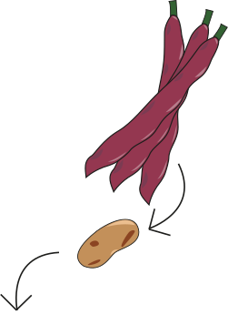
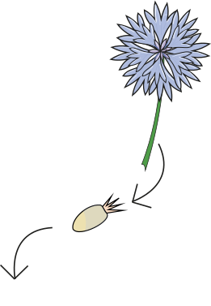

Semences de Pays
Semences de pays développe une production de semences reproductibles, rustiques et adaptées à une agriculture biologique proche des cycles de la nature, en collaboration avec les initiatives nourricières de proximité.
Nos Semences
Haricot à rames Borlotto - Phaseolus vulgaris
Cette variété traditionnelle italienne de haricots à écosser aux gousses zébrées de rouge donne une belle récolte de graines de plusieurs couleurs.
Potimaron Francais-Curcubita Maxima
Potimaron orange en forme de toupie au caractéristiques goût de
châtaigne.
Le plus ancien potimarron débarqué sur le continent.

Bleuet Blauer Junge - Centaurea cyanus
Les délicats pétales de cette magnifique fleur des champs s'emploient pour embellir vos salades d'été et, séchés, dans des mélanges de tisanes.
Points de Ventes
Chez Mamie
Rue des bois 17
1204 Genéve
Le Toninanbourg
Avenue William-Fraise 9
1006 Lausane
Ferme du Joran
Chemin des Philosohes 15
1350 Orbe
Le Grainier
Route des Mines de Sel
1880 Bex
Nouvelles Terre
Rue du Greand-Verger 12
1920 Martigny